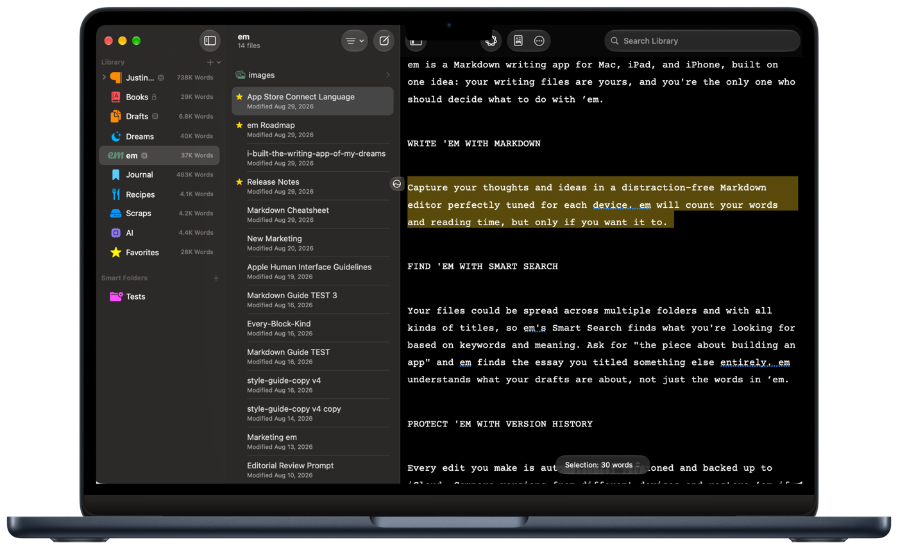
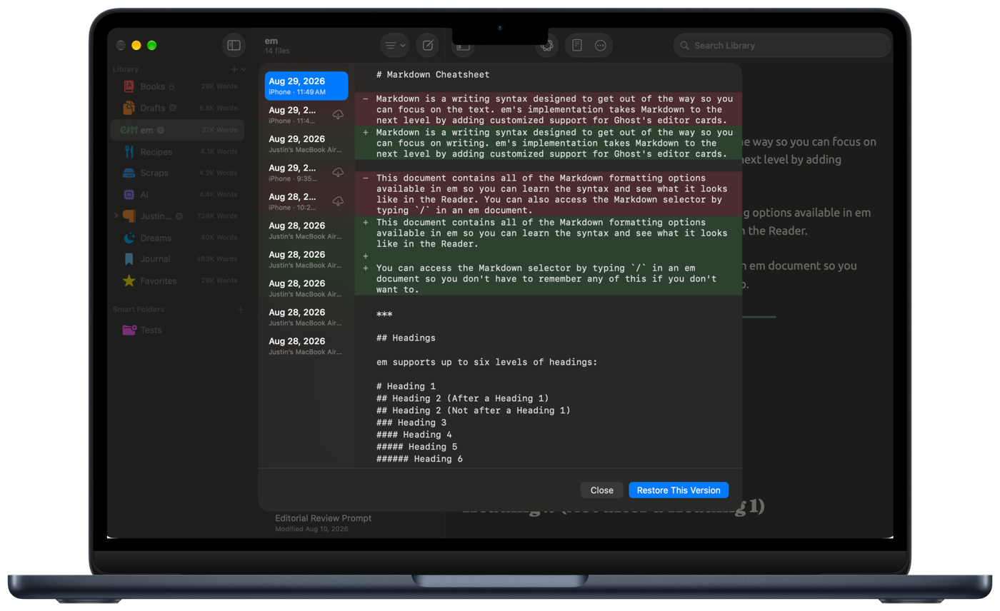
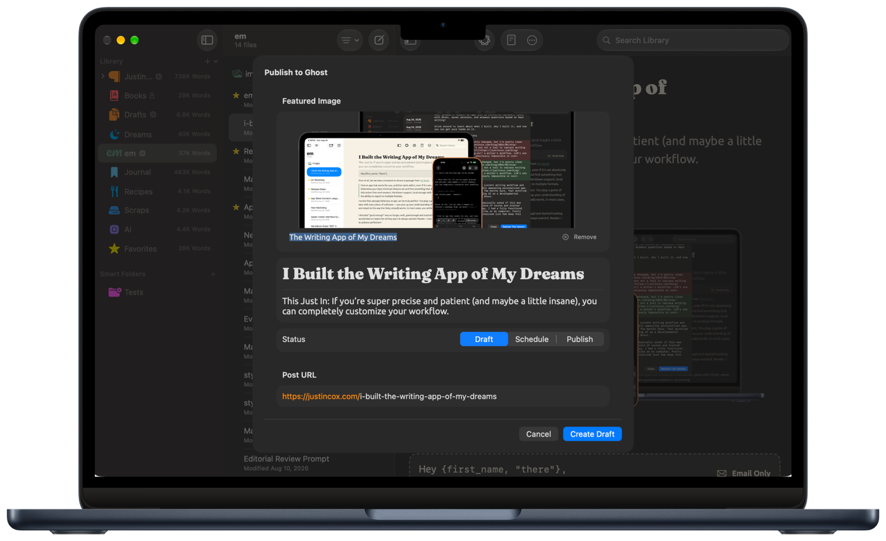

em
Own your drafts and blog posts
Your files are yours, and you're the only one who should decide what to do with ’em.
Write ’em
Capture your thoughts and ideas in a distraction-free Markdown editor perfectly tuned for each device. em will count your words and reading time, but only if you want it to.

Protect ’em
Every edit is versioned automatically and backed up to iCloud. Compare a draft against the version your iPhone saved, restore whichever one you actually want, and stop mourning the paragraph you deleted and regretted immediately.

Publish ’em
Connect your Ghost site and write, edit, back up, and publish natively — 19 Ghost Koenig card types, plus drafts, scheduling, and newsletters, all from em's customized Markdown. Your files can live in iCloud or in Ghost. Either way, you still decide what happens to ’em.

Explore ’em
(but only if you want to)
The only one who should decide about how AI interacts with your writing is you! Enabling AI lets you ask questions and get answers grounded in what's in your files, not what's on the internet. An Editorial Review runs from a prompt that's an ordinary document in your own library — read it, rewrite it, delete it. Turn AI on and Siri can search, add, or edit your documents too, by voice, on Mac, iPad, or iPhone (requires OS 27). em doesn't write your drafts for you. It helps you decide what to do with ’em.
em provides intelligence features only if you opt into ’em. Every AI feature ships off. Once on, AI conversations stay on-device with Apple Intelligence by default. Engage with more powerful models like Claude, ChatGPT, or Gemini with your own API key and your own billing if you want to tap into a more powerful model. Or don't! It's your choice.
Privacy, plainly
Your files are yours and no one can tell you what to do with ’em.
em has no server. That isn't a promise about what em chooses to do with your writing — there's no backend to store data, no account to create, and no company database where it could end up. Your writing syncs through your iCloud and never touches infrastructure you didn't authorize.
Everything Else
-
Universal App
Writing, Versions, and settings sync across devices with iCloud.
-
Smart Search
Full-text and on-device semantic search — type for words, Return for meaning.
-
Apple Shortcuts
Automate publishing to Ghost or creating files from outside em.
-
Apple Journaling Suggestions
Capture memories in Markdown using Apple's on-device suggestions (iOS only).
-
Customize Everything
Change fonts, colors, icons, and more to create the perfect writing environment.
-
Smart Folders
Create folders based on criteria you define.
-
Read Aloud
Have your device read your draft back to you, to catch errors your eyes miss.
-
Export
Save any Ghost post as a Markdown file, anywhere on your device.
-
Offline Editing
Once downloaded, em works without an iCloud or Ghost connection.
-
Even More
Printing, reading time, word counts, and yes — em dash coloring.
Get em
em is coming to the Mac App Store and the App Store.